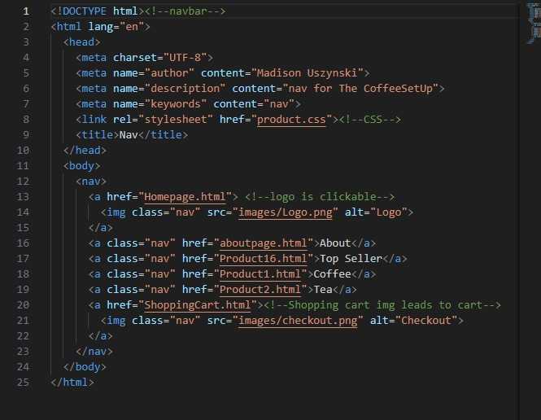

Locate the navbar.html file
Find the item you want to replace/edit
Adjust the name in the <a> element, and assign to the new correlated html url
In the same way as the navbar, locate footer.html, alter the text in <a> elements, and assign to the new correlated html url
nav.js dynamically adds the Nav bar and footer to each page
Using fetch API, html are called by url and convert the response to text, this allows the element to be added by id